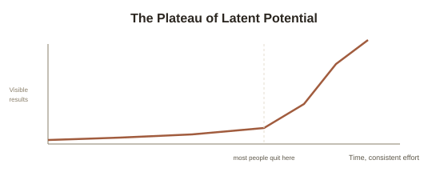
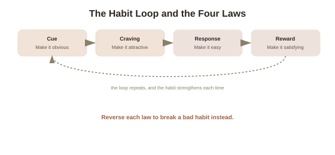

Atomic Habits — James Clear
Okay so here's the pitch of this entire book in one line: you don't need to be a different person to change your life — you just need slightly different habits, repeated for long enough. That's it. That's James Clear's whole argument in Atomic Habits, and the reason it's sold millions of copies is that it actually explains how, instead of just telling you to "believe in yourself" and hoping that works.
Tiny changes, stacked over time — the "atomic" part
The title is a pun. "Atomic" means tiny — like, smaller-than-you-can-see tiny — but it also means an atomic habit is a small habit that's part of a bigger system, the same way an atom is a small building block of something much bigger. Clear's core claim: getting 1% better every day doesn't feel like much in the moment, but compounded over a year, 1% better daily makes you roughly 37 times better by the end of it. 1% worse every day, and you're basically at zero. The scary part isn't that small habits don't matter — it's that they matter so much you don't even notice it happening, in either direction, until months later when the results show up all at once.
This is why habits feel pointless day-to-day and then suddenly feel huge in hindsight. Clear calls the boring middle part the Plateau of Latent Potential — basically, the frustrating stretch where you're doing the work but nothing visible is happening yet. Think of an ice cube in a room that's slowly warming up: nothing happens at 25°F, 26°F, 27°F... and then at 32°F it suddenly melts. All that earlier heat wasn't wasted — it just hadn't crossed the threshold yet. Most people quit right before their own version of 32 degrees.

Stop focusing on goals. Focus on systems.
Here's a genuinely surprising idea from the book: winners and losers often have the exact same goal. Every team in a league wants to win the championship. Every student wants good grades. The goal was never the differentiator — the system (your daily habits and processes) is what actually separates the people who get there from the people who don't. Clear's line: "You do not rise to the level of your goals. You fall to the level of your systems." Set a goal if you want, sure — but then basically forget about it and put all your actual attention into building a system that makes the outcome almost automatic.
The real trick: change who you think you are, not just what you do
This is probably the single most useful idea in the whole book. Clear splits behavior change into three layers: outcomes (what you get — losing weight, winning a game), processes (what you do — your habits and systems), and identity (what you believe about yourself). Most people try to change from the outside in: "I want to lose weight (outcome), so I'll go to the gym (process)." Clear says the people who actually stick with change do it from the inside out: they decide who they want to be first.
Instead of "I'm trying to quit smoking" (which still frames you as a smoker who's struggling), you say "I'm not a smoker." Every time you skip a cigarette, that's not willpower — it's a small piece of evidence for the new identity. Clear calls this "casting votes" for the type of person you want to become. One workout doesn't make you an athlete, but it's one vote toward becoming one. This matters because once something becomes part of your identity, you stop having to convince yourself to do it — it just becomes what you do, the same way you don't have to talk yourself into brushing your teeth.
The Four Laws — the actual how-to part
Every habit runs on a loop: a cue (something triggers you), a craving (you want something to change), a response (you do the habit), and a reward (you get something out of it, which teaches your brain to repeat the loop next time the cue shows up). Clear turns each stage of that loop into a law for building good habits — and doing the exact opposite for breaking bad ones.
- 1. Make it obvious (cue) — Design your environment so the habit is staring you in the face. Want to read more? Leave the book on your pillow so you physically can't ignore it at bedtime. Want to eat less junk food? Don't buy it, so it's not sitting in the kitchen tempting you every time you walk past. To break a bad habit: make the cue invisible — put your phone in another room while doing homework.
- 2. Make it attractive (craving) — Pair a habit you need to build with something you already enjoy — Clear calls this temptation bundling. Only let yourself watch your favorite show while on the treadmill. To break a bad habit, do the opposite: make it look unattractive — actually think through the real downside (less sleep, wasted time, how you'll feel after) instead of only the appealing part.
- 3. Make it easy (response) — This is the big one. Motivation is unreliable; friction is what actually decides what you do. Clear's Two-Minute Rule: shrink any new habit down to something that takes less than two minutes — "read before bed" becomes "read one page." The point isn't that one page matters much on its own, it's that showing up is the actual habit you're building; once you're standing there with the book open, reading more happens naturally more often than you'd think. To break a bad habit, add friction — log out of the app every time so logging back in takes an annoying extra step.
- 4. Make it satisfying (reward) — Humans are wired to repeat what feels immediately good, even when we know the long-term payoff is better elsewhere. So give yourself some kind of immediate, small reward for doing the habit (even just visibly checking it off a list counts, more on that below) so your brain doesn't only associate the habit with delayed, invisible payoff. To break a bad habit, make its cost immediate and visible — a habit-tracking buddy, or a small self-imposed penalty, so you feel the downside right away instead of only months later.

"Never miss twice"
You will mess up. Everyone does — that's not the part that determines whether the habit sticks. Clear's actual rule, which is way more forgiving than most self-help advice: missing once is an accident, but missing twice is the start of a new (bad) habit. Skipped the gym today? Fine, that happens. Just don't skip tomorrow too. This one rule alone removes most of the guilt-spiral that makes people quit completely after a single slip — which, ironically, is usually what actually kills a habit, not the slip itself.
Track it, but don't worship the streak
Habit tracking (an X on a calendar, an app streak) works because it makes the habit obvious, satisfying to check off, and gives you visible proof you're becoming the person you're trying to be. But Clear's warning here is worth remembering: don't let the tracker itself become the point. If you're sick, or your one rest day breaks a 90-day streak, that's fine — the goal was always the identity and the system, not the number. People who treat one missed day as proof the whole thing failed usually quit; people who shrug and pick back up the next day usually don't.
Try this
Ideas for noticing or testing this in your own life.
- Pick one habit you want to build and shrink it down using the Two-Minute Rule — not "exercise more," but "put on my shoes and step outside." The tiny version is the actual habit; everything past that is a bonus.
- Try the identity reframe out loud for something you're working on — instead of "I'm trying to study more," say "I'm someone who shows up for their work." Notice if it feels different to skip it once you've said that.
Worth pulling on?
A few loose threads — if any of these genuinely grab you, that's a good sign of where to go next.
- The book's cue-craving-response-reward loop and its "vote for your identity" framing line up closely with real neuroscience on how habits get built and rewired in the brain. → Already in the library: Neuroplasticity, Chapter 8 covers the basal ganglia mechanism behind exactly this loop.
- If you found this version easier to actually finish than a denser one would've been, that's worth comparing directly against a differently-styled summary of a related book. → Already in the library: Mindset (Carol Dweck) covers a different but related idea — whether you believe you can improve at all — written in a more standard summary style.